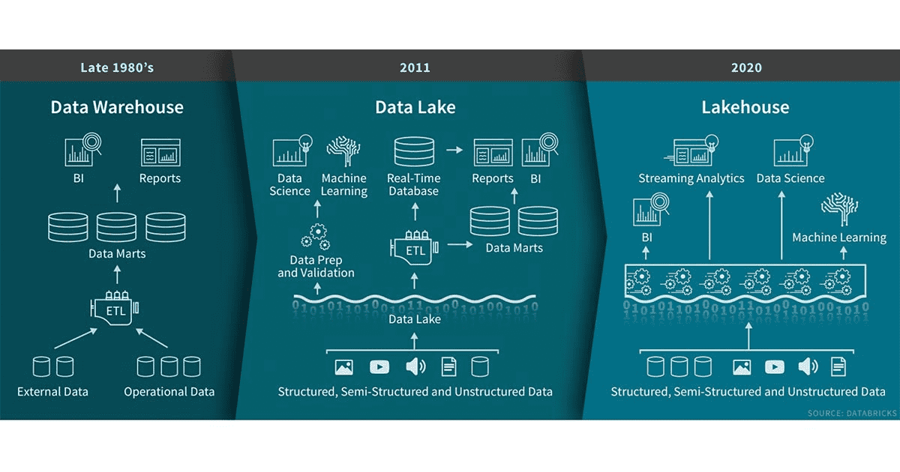

The Curated Data Platform
Last Revision: May 2025
Kevin Feasel (@feaselkl)http://CSmore.info/on/cdp
Who Am I? What Am I Doing Here?


Which data platform is right for me?
The website DB-Engines keeps track of over 400 different data platform technologies, ranging from relational databases to data warehouses, document databases, key-value stores, search engines, time series, graph databases, and more.
Motivation
My goals in this talk:
- Discuss when different data storage types make sense.
- Provide a quick overview of each data storage technology, including use cases and key movers.
- Cover relevant cloud options in AWS and Azure.
A Brief Warning
This talk covers data platform technologies as a broad swath and does not spend much time covering the merits of individual products with respect to one another.
Often times, "the platform you have" is a perfectly reasonable answer for "Which platform should I choose?" Understanding how (and when!) to use these platforms is my goal for today.
A(nother) Brief Warning
I have specific biases. I've worked primarily in the Microsoft data platform space, so most of my personal experience is in that stack, as well as offerings in AWS and Azure.
Aside from that, I have a bias for open-source technologies over commercial platforms.
I will try to make it clear in this talk when I'm being biased.
Agenda
- An Overview
- Relational Databases
- Data Warehousing (Classic and Modern)
- Document Databases
- Key-Value Stores
- Graph Databases
- Time Series Databases
- Vector Databases
- Log Storage
An Example System in Place

Thoughts on the System in Place
Many companies have one database platform, plus Excel (or Google Sheets, etc.). If that's good enough for your company, great! But imagine some sample complaints that you might hear in your own jobs.
- Finances in Excel spreadsheets is clunky.
- Product searches take too long on our website.
- Customers experience slowness making orders.
- No support for the data science team.
- Log review is painful for IT.
Other data platform technologies may mitigate these pain points--while introducing new pain points along the way.
Regarding Multiple Systems
The Upshot
Like power tools, data platform technologies have their specific use cases. Some of them are more versatile than others, but if you pick up the wrong tool for the job, you may struggle to get it done.
Over the rest of this session, I'll help you understand how to select the right tools for the job.
Agenda
- An Overview
- Relational Databases
- Data Warehousing (Classic and Modern)
- Document Databases
- Key-Value Stores
- Graph Databases
- Time Series Databases
- Vector Databases
- Log Storage
Key Requirements
- Data MUST be correct. Eventual consistency and even a few missed records won't work for us.
- We need to handle updates in real time, seeing the most recent information as soon as we save it.
- Performance is less critical than correctness, but still an important factor.
Key Technologies
- Relational database (OLTP -- On-Line Transactional Processing).
Why OLTP?
- Non-distributed, relational database because the data must be correct for everybody, and ACID compliance helps us considerably.
- Performance will generally be good, though analysts far from the data center may need to deal with slower queries.
Key Players: OLTP
Agenda
- An Overview
- Relational Databases
- Data Warehousing (Classic and Modern)
- Document Databases
- Key-Value Stores
- Graph Databases
- Time Series Databases
- Vector Databases
- Log Storage
Key Requirements
- Data MUST be correct. We need business users to be able to trust our data.
- Systems should be easy for non-IT staff to access, ideally within Excel.
- It's okay for some reports to update nightly rather than real-time.
- Performance is less critical than correctness, but still an important factor.
Key Technologies
- Relational database (OLAP -- On-Line Analytical Processing) for connectivity to Excel and reviewing results.
Why OLAP?
- Specifically, the Kimball model for warehousing.
- The data must be correct but may be delayed. We can use an ETL process to populate the warehouse.
- Data marts may be distributed across the globe to meet the performance needs of analysts, along with a central data warehouse to store the full set of data.
- Excel tools like Power Query are designed to work with Kimball-style warehouses.
Key Players: OLAP
OLTP + OLAP
Relational databases can serve as either OLTP or OLAP--these are database designs rather than distinct technologies.
There are also technologies dedicated to extending beyond relational OLAP, such as SQL Server Analysis Services and Oracle Essbase.
Reference Architecture
{kind=link}
Modern Data Warehousing
Apache Hadoop turned the data warehousing and analytics world upside-down. Although it is now a legacy platform, some of its progeny live on, in the form of distributed storage in a data lake, the Apache Spark platform, and Apache Kafka.
The Data Lake
The Hadoop Distributed File System and subsequent cloud storage platforms like Amazon's S3 and Azure Blob Storage opened up the possibility of massive, distributed storage of data, including multi-structured and unstructured data, which typically would not fit well in a classic data warehouse.
The data lake provides a central location for historical storage of a broad array of company data for the purpose of data science and machine learning activities.
The Data Lakehouse
Databricks coined the term Lakehouse to represent the combination of data warehouse and data lake in one managed area.
Since then, we've seen platforms like Databricks, Snowflake, and Microsoft Fabric move quickly in this space.
The Data Lakehouse
Key Players: Modern DW
Reference Architecture

Agenda
- An Overview
- Relational Databases
- Data Warehousing (Classic and Modern)
- Document Databases
- Key-Value Stores
- Graph Databases
- Time Series Databases
- Vector Databases
- Log Storage
Key Requirements
- Performance is critical. If you work for a global company, you may need fast response times across the globe.
- Consistency is not critical. Some kinds of product data can be out of date or show different results between regions for a minute or two.
- For a system like a product catalog, we may still want a single source of truth for product data, including quantity on hand, price, etc.
Key Technologies
- Document database for "republishing" OLTP data and maximizing performance.
- (Optional) Relational database (OLTP) to act as the single source of truth.
What is a Document DB?
- Key-value store
- The value is a complex document, often JSON (or JSON-like)
- The value may be nested:
ProducthasImages,PriceChanges, andStoreAvailabilityas well as attributes likePrice,Title, andBrand - Data retrieval is typically one record at a time, but allows for scans of data
Key Players: Document DBs
Reference Architecture
Agenda
- An Overview
- Relational Databases
- Data Warehousing (Classic and Modern)
- Document Databases
- Key-Value Stores
- Graph Databases
- Time Series Databases
- Vector Databases
- Log Storage
Key Requirements
- Performance is critical. Milliseconds are money.
- Data is typically pretty stable, with occasional updates but typically many reads of a data point between update.
- Consistency is important, but occasionally reading stale data is okay.
Key Technologies
- In-memory key-value caching for fast lookups.
- Simple storage for static content.
- Relational database (OLTP) to act as the single source of truth.
- (Optional) Document database for "republishing" OLTP data and maximizing performance.
Key Players: Key-Value Caches
Reference Architecture

Agenda
- An Overview
- Relational Databases
- Data Warehousing (Classic and Modern)
- Document Databases
- Key-Value Stores
- Graph Databases
- Time Series Databases
- Vector Databases
- Log Storage
Graph Databases
Graph databases have a niche in the analytics space. Graph databases combine nodes (which represent entities) and edges (which represent connections between entities).
Key Features of Graph Databases
- Path calculation (especially with weights, such as distance between cities)
- Fraud detection via link analysis: observe the links between known fraudulent entities and non-marked entities.
- Modeling fluid relationships between entities.
- Laying out network maps and other complex topologies.
The Problem with Graph Databases
The biggest problem with graph databases is that you can do the same things with relational databases, but with only one concept (the relation) versus two (nodes and edges).
The second-biggest problem with graph databases is that there is no common graph language like SQL or common implementation specs between products.
Key Players: Graph Databases
Accept No Substitutes
If you do go with a graph database, Neo4j is likely to be your best bet by far.
There are some very small graph database products that I would avoid simply because of how little market share they hold, as well as some products that half-heartedly offer graph support (looking at you, SQL Server!), but none of them provide much in this space. In the cloud, AWS Neptune is fine but I'd shy away from Cosmos DB.
Agenda
- An Overview
- Relational Databases
- Data Warehousing (Classic and Modern)
- Document Databases
- Key-Value Stores
- Graph Databases
- Time Series Databases
- Vector Databases
- Log Storage
Key Requirements
- Data is time-sequenced and we care about analyzing relevant data over time.
- Data ingestion rates are very high, perhaps as high as millions of data points per second.
- Most reports and dashboards need to aggregate and downsample data, showing trends over time periods (e.g., hourly, daily, weekly, monthly).
Key Features of Time Series Databases
- Time is a first-class citizen--indexing is based on timestamp.
- Specialized compression algorithms compact data points more efficiently than generic databases.
- Automated retention policies delete older data.
- Automated downsampling rolls up data points to reduce disk space requirements.
- Query syntax enhancements focus on time series questions such as moving average, rate calculations, anomaly detection, and interval calculation.
Key Players: Time Series DBs

Agenda
- An Overview
- Relational Databases
- Data Warehousing (Classic and Modern)
- Document Databases
- Key-Value Stores
- Graph Databases
- Time Series Databases
- Vector Databases
- Log Storage
Key Requirements
- We want to send our data to a large language model for further analysis.
- We want to perform semantic search on our data.
- Our service needs to determine which images or videos are visually similar, even if they don't have identical metadata.
Key Features of Vector Databases
- Converts data into high-dimensional vectors, capturing semantic meaning.
- Search is typically of the "Approximate Nearest Neighbor" variety, finding the most similar vectors even if they aren't perfect matches.
- Specialized indexing works to accelerate similarity search.
- Can include traditional metadata filtering to assist with comparison.
Vectors and Embeddings
Embeddings are a way of representing data in a high-dimensional space, where similar items are closer together. This is useful for tasks like semantic search, recommendation systems, and image recognition.
Example:
Vector Similarity
Key Players: Vector DBs
Agenda
- An Overview
- Relational Databases
- Data Warehousing (Classic and Modern)
- Document Databases
- Key-Value Stores
- Graph Databases
- Time Series Databases
- Vector Databases
- Log Storage
Key Requirements
- Need a central source for logging across multiple services.
- Sometimes logs will follow a specific format, but no guarantee all records have the same shape.
- Queries are often "What happened at this time?" or "What errors do we see?"
Key Technologies
- The ELK Stack as a pattern
- Log storage: Elasticsearch
- Log shipping and event handling: Logstash
- Log querying and visualization: Kibana
- Standalone logging services
Roll Your Own or Purchase?
There are full-service logging solutions, such as Splunk, Datadog, Loggly, and SumoLogic. These products perform quite well and tend to be accessible for developers and administrators. The downside is that they tend to be quite expensive.
On the other side, open source products exist as well and can be quite powerful when used correctly, but the learning curve tends to be much higher.
Key Players: Logging

Reference Architecture

Wrapping Up
This has been a look at the data platform space as it stands. This is a fast-changing field with interesting competitors entering and leaving the market regularly.
Wrapping Up
To learn more, go here:
https://CSmore.info/on/cdp
And for help, contact me:
feasel@catallaxyservices.com | @feaselkl
Catallaxy Services consulting:
https://CSmore.info/on/contact